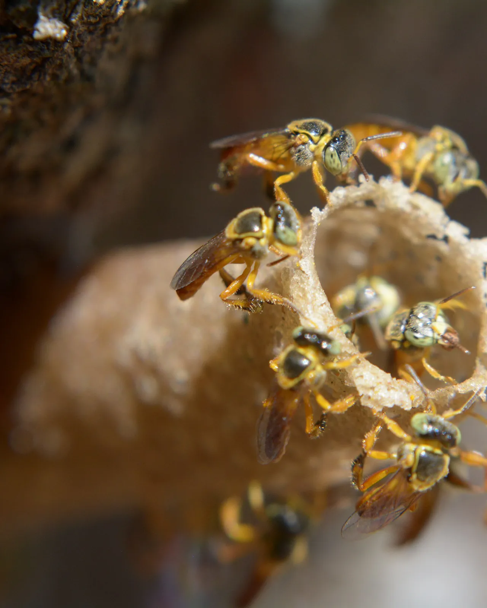
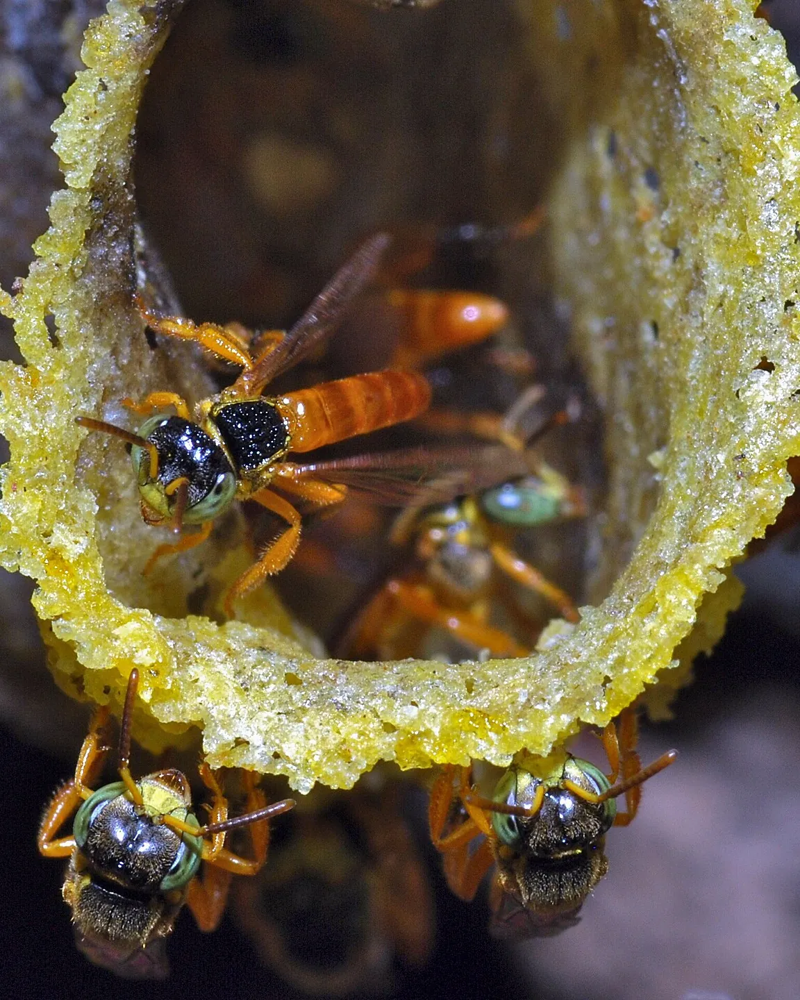
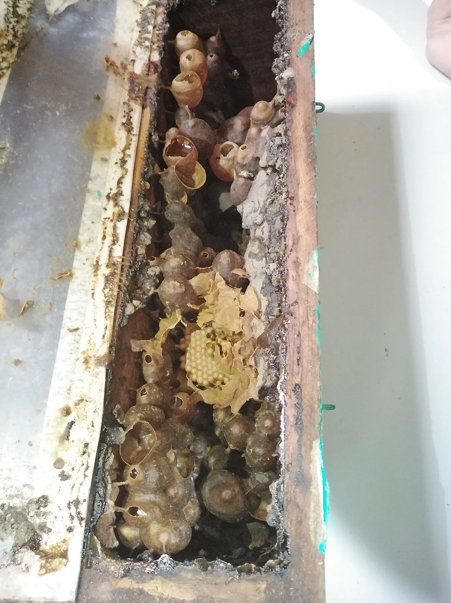
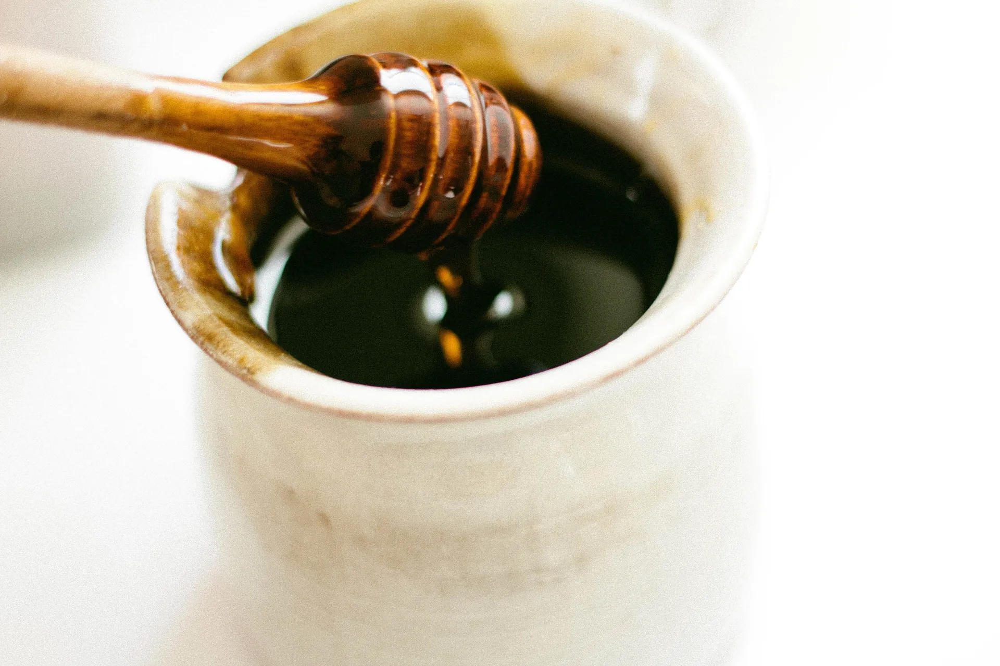
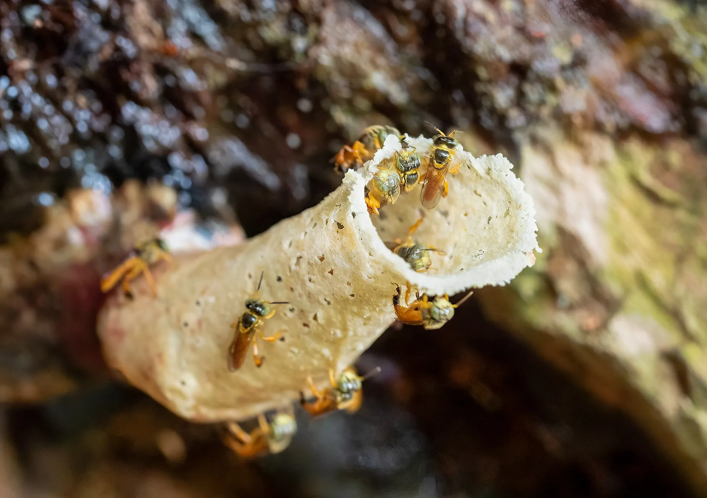
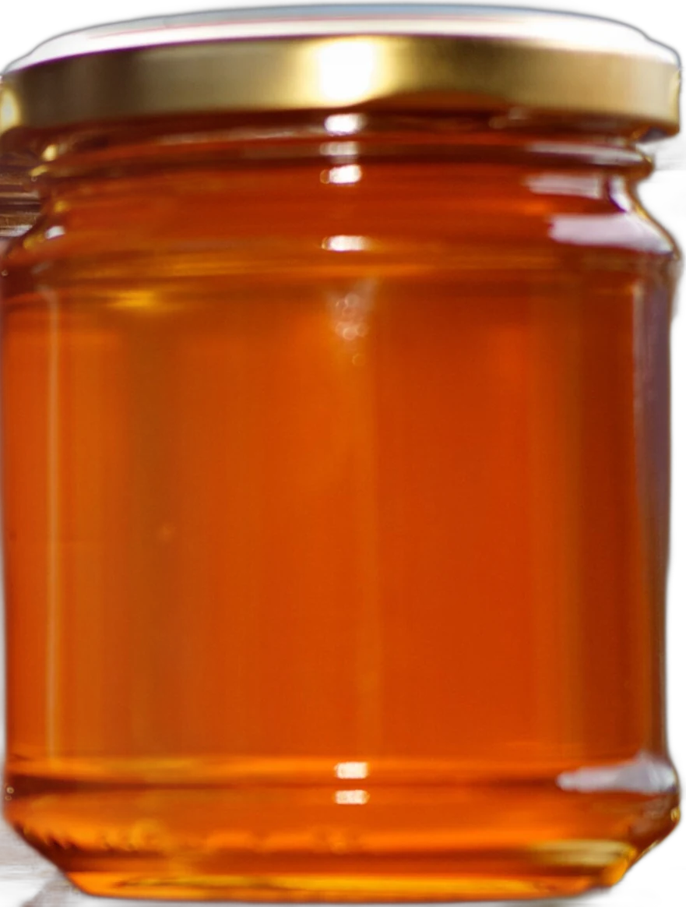

Mel de abelha nativa sem ferrão
Ouro líquido
Jataí
Colhido pote a pote na Mata Atlântica e no Cerrado. Feito por abelhas que não picam.
ComprarUm novo ângulo do doce
Mais ácido, mais fluido e mais raro que o mel de supermercado. Uma colônia de Jataí entrega cerca de um litro por ano.1

Abra o pote
Tire a tampa e vem primeiro o perfume: flor do mato, resina, um fundo de limão. É o cerume, mistura de cera e resina vegetal onde a Jataí guarda o mel.

O Brasil tem centenas de espécies de abelhas sem ferrão. Cada bioma tem as suas, e cada uma faz um mel diferente.
Ver os méisO que tem dentro
Nada que a abelha não tenha colocado.
- 1Néctar de floradas silvestres, sem alimentação artificial
- 2Umidade natural de mel nativo, por volta de 27%2
- 3Acidez que deixa o final limpo, pH perto de 3,82
Sem calor.
Sem mistura.
Sem atalho.


Escorre devagar
Fluido como xarope fino. Por isso o mel nativo mora na geladeira, entre 2 e 8 °C.
Guia
Os méis do Brasil
As abelhas mais criadas para mel no país e a região onde cada uma é nativa. Escolha a sua.

Quatro milímetros de abelha
A flor decide o sabor
No mel de Apis mellifera, o nome vem da florada que domina a colheita. Mesma abelha, méis que não se parecem.
Méis com endereço
Indicações Geográficas registradas no INPI. Só usa o nome quem produz ali, do jeito tradicional.3
Pode criar?
Depende de onde você mora. A Resolução CONAMA nº 496/2020 organiza a meliponicultura no país.4
-
1
Só espécie da sua região
A criação é permitida com abelhas nativas da área de ocorrência natural. Levar uma uruçu do Nordeste para o Sul, por exemplo, não pode.
-
2
Colônia não se tira do mato
Novas colônias vêm da divisão de ninhos já criados, de caixas-isca ou de resgate autorizado. Derrubar árvore para pegar ninho é crime ambiental.
-
3
Para vender, tem registro
O mel vendido precisa de inspeção sanitária (SIM, SIE ou SIF) e segue as regras do seu estado para mel de abelha sem ferrão.
Este guia é informativo. Antes de começar, confira a lista de espécies nativas do seu estado e fale com o órgão ambiental local.

Pronta entregaAviso de colheita no seu e-mail e 10% no primeiro pote.
Ao se inscrever, você concorda com a nossa Política de Privacidade. Dá para sair quando quiser.